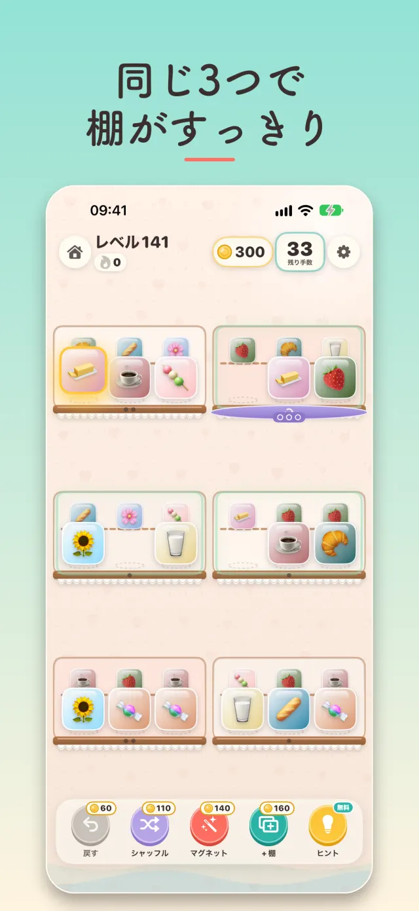
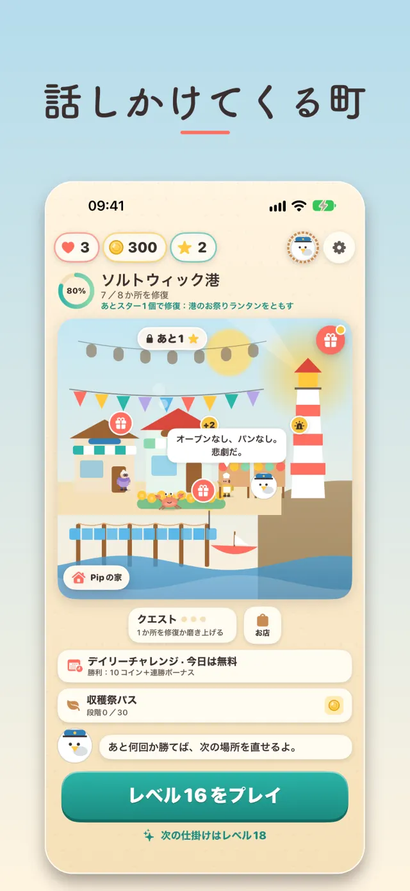
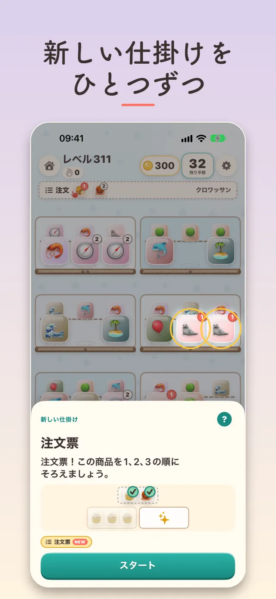
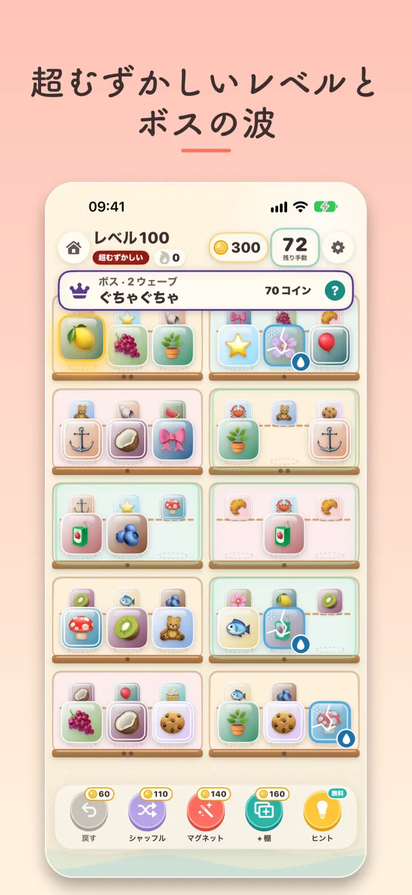
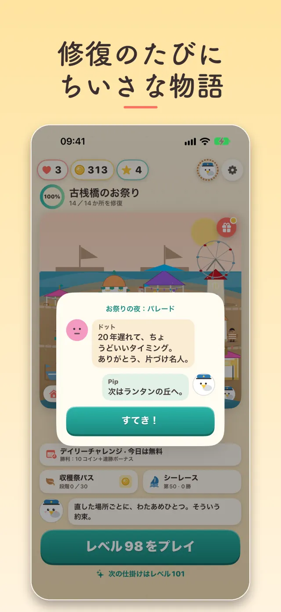
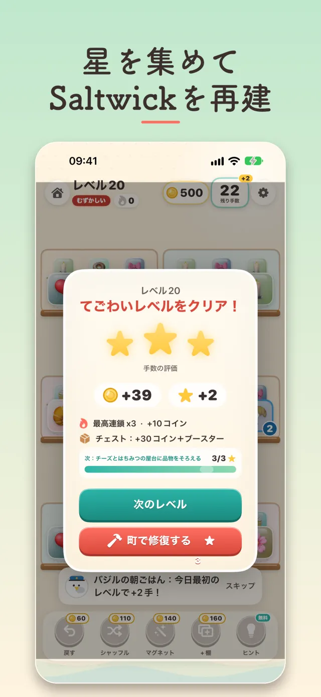

新しい仕掛けがひとつずつ
- ひび割れ棚、シュート、回転台、カウンター、吹雪、注文票が、氷、カギ、ギフト、チェーン、木箱、霧、タイムアタック、ベルトコンベアに加わる
- レベル開始シートが、最初の一手の前にそのレベルのグッズで新しい仕掛けを見せてくれる。「遊び方」ガイドでルールはいつでもワンタップ
- 仕掛け同士の組み合わせ、バリエーション、そしてダブルシフトで2回目のグッズの波がやってくる
3つそろえて港町を修復
棚を片づけて、3つそろえて、海辺の町をよみがえらせよう。そこに住む人たちとも出会える。
28秒で見る、Saltwick港、レベル開始シート、レベル141、そして修復。






棚から棚へグッズを動かし、同じものを3つそろえて消していく。どのレベルにも必ず解き方があり、クリアするたびに星がもらえる。星を使って、灯台、カフェ、街灯と、Saltwickの町をひとつずつ修復しよう。
ライフは3つ。レベル13からは失敗するとライフを1つ失い（最初のレベルは何度でも無料でやり直せます）、失ったライフは2時間ごとに1つ戻ります。ショップではコインで補充でき、ハーバーVIPならライフが4つに、スターターパックには1時間のライフ無制限が含まれます。
レベル10までは広告は一切ありません。それ以降、リワード動画（ライフ+1、数手追加、無料ブースター）はいつも自分で選ぶもので、1日最大10回。レベル15からは一部のクリア後に短い広告が流れることがあります。1日最大5回で、失敗のあとには流れません。「広告を削除」（1回の購入）とハーバーVIPでレベル間の広告は消え、任意の動画はそのまま残ります。レベル1のあとに、広告の同意（EEA・英国・スイス）と広告識別子の利用許可を尋ねます。断っても広告がパーソナライズされなくなるだけです。
すべて任意です。コインパックは500・1,400・3,100・8,500コイン。1回限りのスターターパックは900コイン、ブースター6個、1時間のライフ無制限。ハーバーVIPは月額サブスクリプションで、毎日60コイン、週1回のチェスト、ライフ4つ目、レベル間の広告なし。28日間シーズンのハーベストパス プレミアム。そして「広告を削除」。価格はApp Storeの通貨で各購入ボタンの横に表示され、課金前にAppleが確認します。コインはコンティニュー、ライフ、ブースターに使え、レベルの解き方が変わることはありません。設定で1日の利用上限を決められます。
ゲーム内のストアを開き、購入時と同じAppleアカウントでサインインして「購入を復元」をタップします。ハーバーVIPは、iOSの設定 > 自分の名前 > サブスクリプションで、更新日の24時間前までに解約しない限り毎月更新されます。返金はAppleが対応します。
はい、サインインしている場合のみ。デイリーチャレンジのスコアと毎週のシーレースの勝利数が2つのランキングに送られ、91の実績が進み具合を記録します。サインアウト中は何も送信されず、ゲームはまったく同じように遊べます。独自のサインイン画面は表示しません。
私たちは何も集めません。アカウントも、分析も、自前のサーバーもありません。進行状況はiPhoneの中に保存されます（このバージョンにiCloud同期はありません）。広告はGoogle AdMobが配信し、一般的な広告データを受け取ります。パーソナライズはあなたの許可があるときだけ。Game Centerのスコアと購入はAppleが処理します。詳しくはプライバシーポリシーをご覧ください。
iOS 17以降のiPhone。iPadではiPhone互換モードで動作します。日本語、英語、ドイツ語、フランス語、スペイン語、イタリア語、ポルトガル語（ブラジル）、ルーマニア語、韓国語に対応。
App Storeで無料。Pipが港で待っています。